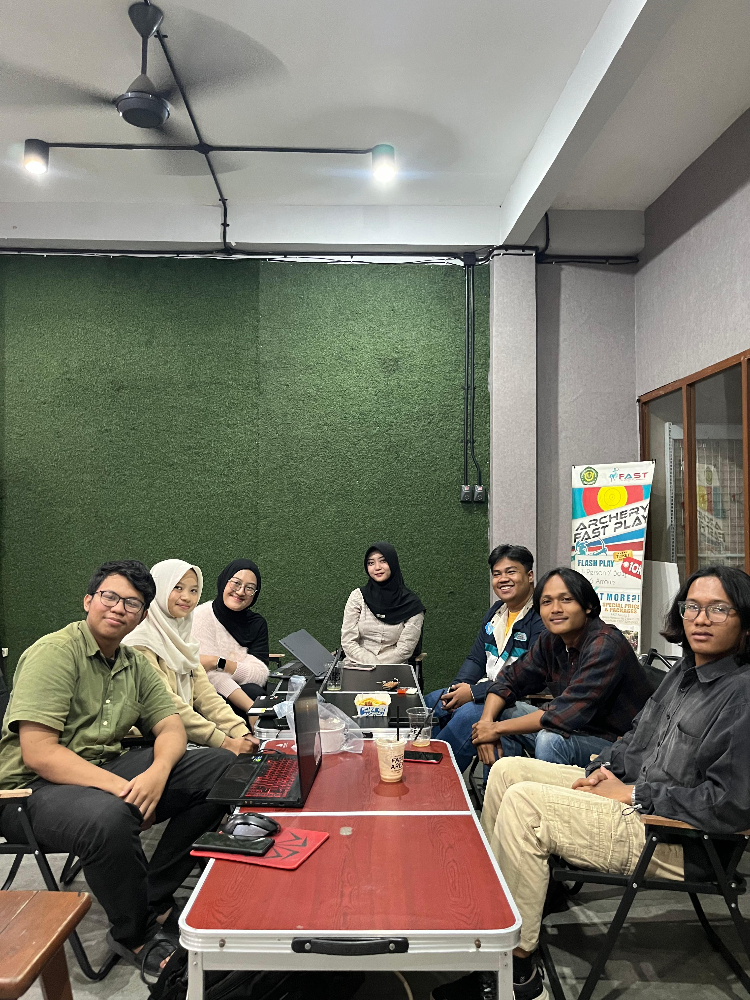
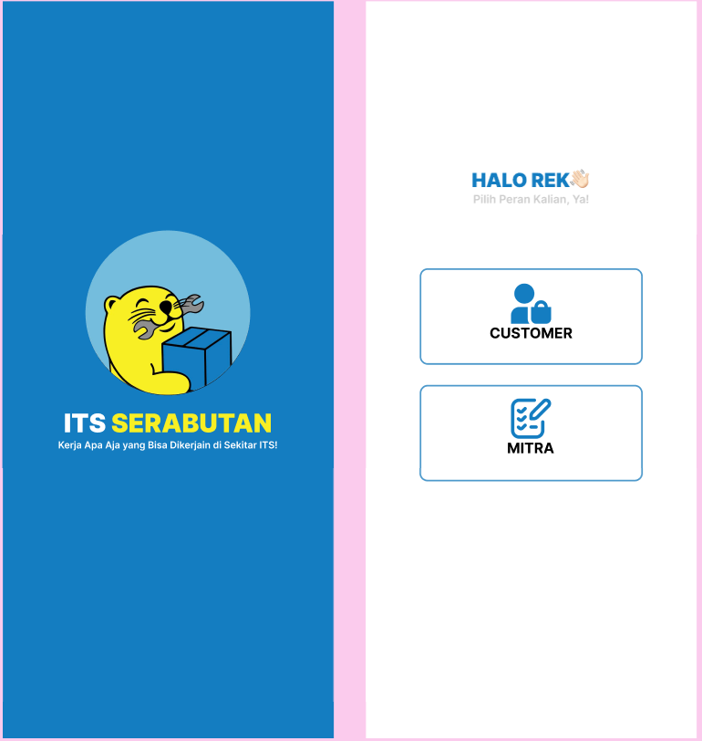
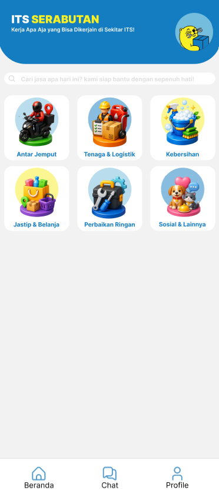
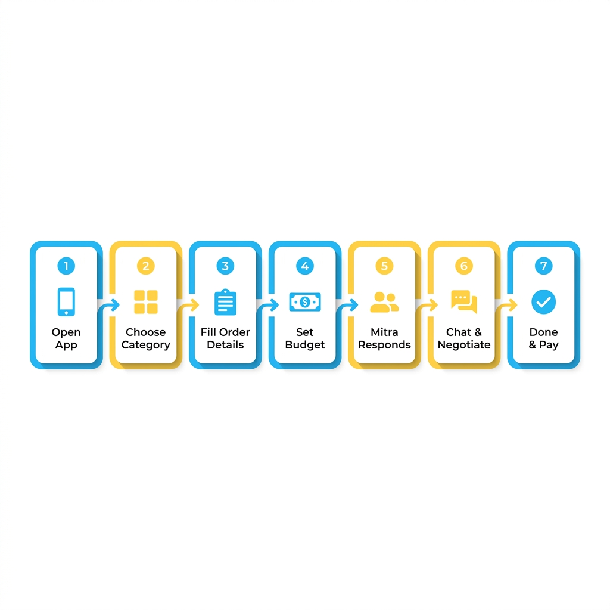

Pernah nggak kamu sebagai anak kos merasa kewalahan? Tugas numpuk, kamar berantakan, lapar tapi males keluar, dan nggak ada siapa-siapa yang bisa dimintai tolong. Di sisi lain, ada temenmu yang lagi butuh uang jajan tambahan tapi bingung harus kerja apa yang bisa disesuaikan sama jadwal kuliah.
Dua masalah yang berbeda — tapi solusinya bisa satu.
Itulah yang jadi titik awal lahirnya ITS Serabutan.
Latar Belakang: Dua Krisis yang Sering Diabaikan
Kami tim mahasiswa Teknologi Kedokteran ITS melakukan asesmen lapangan di lingkungan kampus dan menemukan dua pola yang konsisten:
Yang Butuh Jasa
Beban hidup mandiri yang besar: mengurus kebutuhan harian sendiri, tidak punya jaringan bantuan, dan lama-kelamaan memicu isolasi sosial hingga burnout. Ini bukan sekadar capek biasa — ini masalah kesehatan mental nyata yang dialami ribuan mahasiswa perantau setiap tahunnya.
Yang Punya Keahlian
Mahasiswa yang punya waktu dan kemampuan tidak punya wadah formal untuk menghasilkan uang dari keahlian sehari-hari mereka. Mau ngiklan di TikTok atau WA grup? Bisa, tapi tidak ada sistem, tidak ada kepercayaan, dan sering miskomunikasi.
Kami juga mewawancarai langsung Hegel dan Fitra, founder ITS Serabutan — layanan jasa mahasiswa yang sudah berjalan manual via WhatsApp sejak Maret 2026. Faktanya: dalam hitungan minggu, mereka sudah kewalahan dengan permintaan yang tidak bisa ditangani. Sistemnya belum ada, tapi permintaannya nyata.

Solusi: Platform Jasa yang Aman, Terstruktur, dan Bermartabat
Dari situ kami merancang ITS Serabutan — aplikasi mobile yang menghubungkan:
- Customer — mahasiswa atau warga yang butuh bantuan
- Mitra — mahasiswa ITS yang ingin menghasilkan dari keahlian mereka
Yang membedakan ITS Serabutan dari sekadar grup WhatsApp:
Fitur Utama: 6 Kategori Jasa


Aplikasi ini mencakup enam kategori jasa yang dirancang berdasarkan kebutuhan nyata mahasiswa ITS:
Antar Jemput
Pesan ojek dari sesama mahasiswa. Tarif sudah ada referensi zonanya — sekitar ITS (Keputih/Mulyosari) Rp8.000, ke Unair/Gubeng Rp15.000, Surabaya Barat Rp25.000. Harga bisa dinegosiasi.
Tenaga & Logistik
Rakit perabot, angkut barang, pasang lampu, bantu pindahan. Untuk yang baru pindah kos atau beli furniture online tapi bingung rakitnya gimana.
Kebersihan
Bersih-bersih kamar kos, cuci motor, hingga bersih-bersih tempat usaha. Tinggal tentukan jumlah orang dan budget-mu.
Jastip & Belanja
Minta tolong beliin sesuatu di minimarket. Ada alur khusus: mitra kirim foto struk dulu sebelum kembali, jadi harga transparan tanpa kejutan.
Perbaikan Ringan
Gembok cakram tidak bisa dibuka, lampu mati, keran bocor — jasa teknis kecil yang susah dikerjain sendiri tapi terlalu kecil untuk panggil tukang.
Sosial & Lainnya
Teman makan? Teman belajar? Titip kucing? Atau yang lebih kreatif — cari kodok, nagih hutang, mantau orang di kafe. Beneran pernah ada ordernya!
Cara Kerja: Model InDrive yang Adil

Yang bikin ITS Serabutan berbeda dari Gojek atau platform lain: kamu yang tentukan harganya dulu.
Buka Aplikasi
Login dengan email, pilih kategori jasa yang kamu butuhkan
Isi Detail Pesanan
Tentukan lokasi, deskripsi pekerjaan, dan tentukan budget-mu
Sistem Broadcast
Pesananmu dikirim ke mitra yang sesuai kategori di sekitar area
Mitra Merespons
Mitra menerima hargamu atau menawarkan harga lain
Pilih Mitra
Lihat profil, rating, dan harga tiap mitra — lalu pilih yang cocok
Eksekusi & Tracking
Mitra kerjakan pesanan dengan update status real-time
Selesai & Bayar
Konfirmasi selesai → baru bayar. Mitra dapat 100% dari harga
Demo Interaktif: Rasakan Langsung Alur Pesanan
Berikut simulasi singkat bagaimana percakapan negosiasi di ITS Serabutan berlangsung:
↑ Coba klik tombol "Setuju" pada negosiasi di atas!
Di Balik Layar: Teknologi yang Kami Pakai
Untuk yang penasaran dengan sisi teknisnya:
Kenapa Flutter? Satu codebase untuk Android & iOS, dan arsitekturnya bersih untuk tim yang membagi kerja per fitur. Kenapa Supabase? Gratis untuk skala mahasiswa, sudah include auth, realtime, dan storage untuk foto KTM dan struk jastip.
final services = [
ServiceItem(icon: Icons.motorcycle, label: 'Antar Jemput'),
ServiceItem(icon: Icons.local_shipping, label: 'Tenaga & Logistik'),
ServiceItem(icon: Icons.cleaning_services, label: 'Kebersihan'),
ServiceItem(icon: Icons.shopping_bag, label: 'Jastip & Belanja'),
ServiceItem(icon: Icons.build, label: 'Perbaikan Ringan'),
ServiceItem(icon: Icons.people, label: 'Sosial & Lainnya'),
];Database dirancang dengan 9 tabel utama yang mengakomodasi semua alur — dari ORDER_BIDS untuk sistem tawar-menawar hingga JASTIP_RECEIPTS yang khusus menyimpan foto struk belanja.
📊 Arsitektur Database (9 Tabel)
Proses: Dari Asesmen Lapangan ke Kode
Kami tidak langsung coding. Prosesnya dimulai dari pendekatan yang terstruktur:
Asesmen Lapangan
Wawancara dengan founder ITS Serabutan, mahasiswa ITS, dan analisis sistem yang sudah berjalan secara informal via WhatsApp.
Perancangan Sistem
Flowchart bisnis 13 langkah (3 jalur aktor), ERD 9 tabel, dan arsitektur 3 layer.
Desain UI/UX
Di Figma, dengan sistem warna biru dan kuning mengacu identitas ITS, total 20+ screen.
Development
Dibagi per fitur: Product Owner, Scrum Master, UI/UX, Frontend, Backend. Dikelola dengan metode Scrum dalam 5 sprint.
Desain yang dibuat dengan AI (untuk kerangka awal) vs desain dari hasil interview lapangan punya perbedaan signifikan. AI tidak tahu bahwa tarif zona di sekitar ITS sudah terstandarisasi secara informal — Rp8.000 untuk jarak dekat, Rp15.000 untuk menengah. Data itu hanya bisa dapat dari wawancara langsung.
Dampak yang Diharapkan
Lebih dari sekadar aplikasi pemesanan jasa, ITS Serabutan punya misi yang lebih dalam:
Untuk yang Burnout
Ada bantuan nyata yang bisa dipesan kapan saja, bahkan sekadar teman makan agar tidak sendirian.
Untuk yang Butuh Penghasilan
Platform aman dan terpercaya yang tidak memotong pendapatan mereka.
Untuk Komunitas ITS
Ekosistem saling membantu yang terstruktur dan bermartabat antar mahasiswa.
Kami percaya bahwa teknologi yang paling bermakna bukan yang paling canggih, tapi yang paling relevan dengan masalah nyata orang-orang di sekitar kita.
Penutup
ITS Serabutan lahir dari satu pertanyaan sederhana: "Siapa yang bisa bantu?"
Dan jawabannya ternyata ada di sekitar kita — sesama mahasiswa yang juga sedang berjuang, tapi punya keahlian dan waktu yang bisa saling mengisi.
Kalau kamu mahasiswa ITS atau tinggal di sekitar Sukolilo Surabaya — nantikan aplikasinya. Dan kalau kamu punya keahlian apapun yang bisa membantu orang lain — daftarkan dirimu sebagai mitra.
Kerja apa aja yang bisa dikerjain di sekitar ITS? Semuanya bisa.
🚀 Tertarik Menjadi Bagian dari ITS Serabutan?
Daftarkan dirimu sebagai mitra dan mulai hasilkan uang dari keahlianmu.